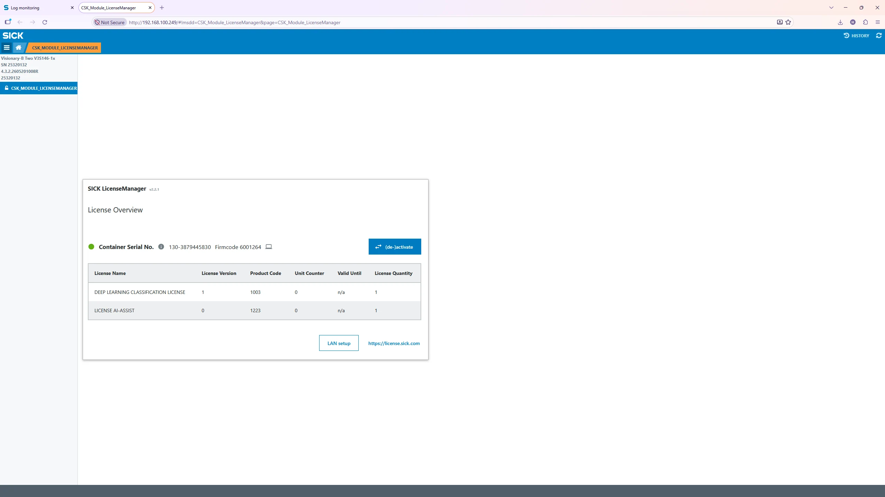
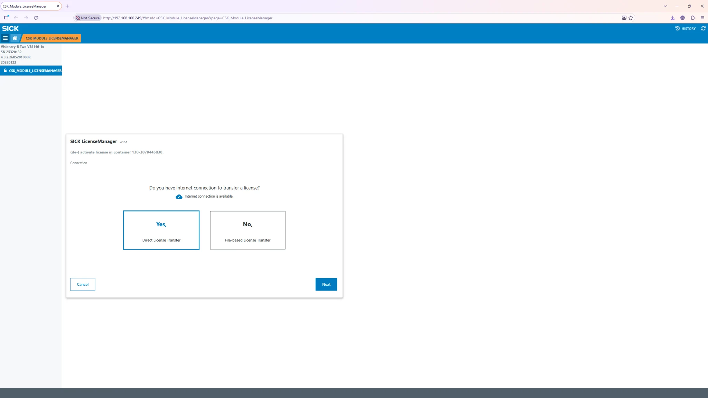
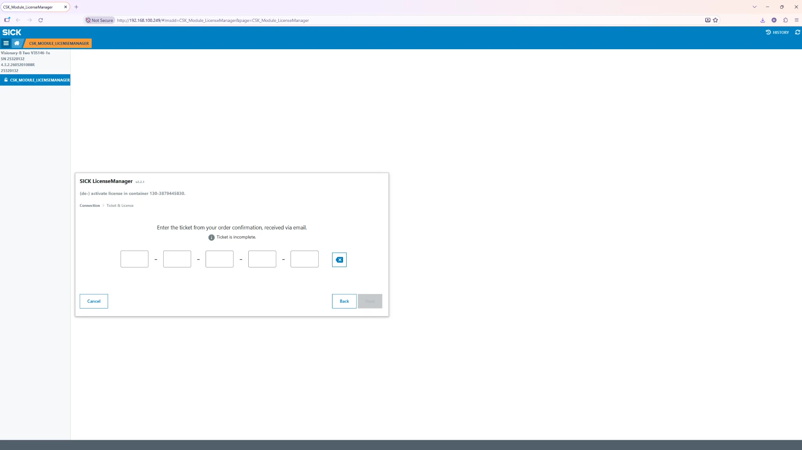
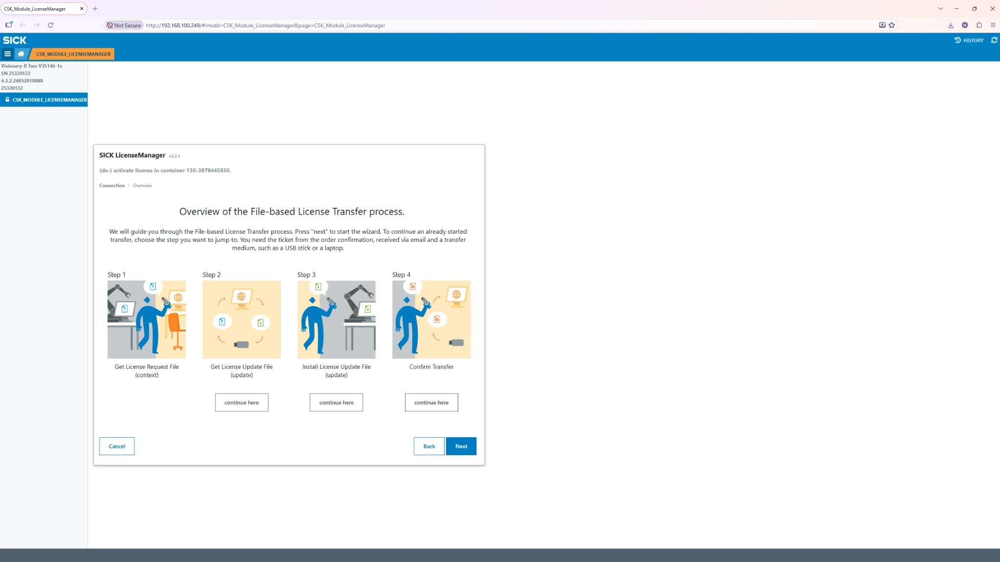

Deep Learning Classification License
The Visionary B-Two must have a valid SICK Deep Learning Classification license (SICK part number 1614850) for sustained on-device neural network inference. Use the SICK LicenseManager running on the camera to activate the license ticket.
| Item | What to know |
|---|---|
| Required license | Deep Learning Classification License · part no. 1614850. |
| Activation ticket | Delivered by SICK after license purchase, typically via order-confirmation email. Keep it confidential. |
| Device binding | Activation is associated with the camera’s CodeMeter container ID. Check that you are activating the correct physical device. |
| Two methods | Direct online license transfer, or offline file-based transfer using a second internet-connected PC. |
| Inference indicator | The application reports the device DNN license (including any trial/limited state). This differs from its informational app-license indicator. |
1. Open SICK LicenseManager

- Connect a PC to the same reachable network as the Visionary B-Two camera and open a browser.
-
Open the installed CSK_MODULE_LICENSEMANAGER page from the
camera navigation menu. The supplied screenshot uses the page URL
pattern
http://<camera-ip>/#!msdd=CSK_Module_LicenseManager&page=CSK_Module_LicenseManager. Replace the camera IP with yours. Device firmware or module installation can change the exact URL. - Check the License Overview first. If DEEP LEARNING CLASSIFICATION LICENSE is already present with a valid quantity, no new activation is needed. Otherwise, open the (de-)activate licensing workflow and choose activation; do not deactivate an existing valid production license. Confirm the displayed device and container match the camera you intend to activate.
- On the Connection screen, choose Yes – Direct License Transfer when the camera-side transfer can reach the licensing server, or No – File-based License Transfer when it cannot.

2A. Direct online license transfer
- On the Connection screen select Yes – Direct License Transfer and click Next. This method requires internet connectivity to the licensing service from the license-transfer environment.
- On the Ticket & License screen, enter the activation ticket from your SICK order confirmation in the five ticket fields. The Next button stays disabled until a complete ticket is entered.
- Click Next. Follow the wizard prompts to choose the available Deep Learning Classification license and confirm transfer to the camera. Review the target device/container before confirming.
- Wait for the wizard to display a successful license transfer. Do not close the browser or unplug the camera during an active transfer.
- Return to the license overview and verify the activated product. Reload the Visionary AI Object Detection Monitoring app if necessary, then verify inference on the Monitoring page.

2B. Offline file-based license transfer
Use this method when the camera itself cannot reach the SICK license server. You need a browser connected to the camera, an internet-connected PC, and a way to transfer three files between them.

-
Get License Request File (context): On the camera
LicenseManager, select No – File-based License Transfer,
click Next and follow Step 1 to download a device-specific
context/request file (
*.WibuCmRaC). Keep the file unchanged. It identifies the target camera container. -
Get License Update File (update): On an internet-connected
PC, visit
https://license.sick.com/, enter the activation ticket, choose the device/SICK SENSOR/SIM
activation option where prompted, and select file-based transfer.
Upload the context/request file, then download the issued license
update (
*.WibuCmRaU). - Install License Update File: Transfer the update file back to the camera-connected PC. In the same LicenseManager wizard, select the Step 3 continuation or proceed with Next, choose the update file, and install it on the same camera. Check that LicenseManager reports a successful installation.
-
Confirm Transfer: Follow Step 4 to save the
confirmation/receipt file (usually
*.receipt.WibuCmRaC). Return to the internet-connected PC and upload this receipt to the SICK license site to complete the transaction record. - Reopen the device license list, verify the activated Deep Learning feature and return to Monitoring to confirm that inference runs without a license restriction.
3. Confirm the license in the application
- Open Visionary AI Object Detection Monitoring → Monitoring. Ensure the app is ready and camera connected.
- Enable a correctly loaded network model and apply changes with Reload app. Present an object the model can recognize.
- Check for detection boxes and review notifications and Log Monitoring for license warnings. If a worker still reports a LIMITED/TRIAL state or inference is blocked, re-check the installed license on the exact camera and reload the app.
- Record the camera identity, license part number, activation status and service date in your commissioning notes—not the activation ticket itself.
Common activation problems
| Problem | What to check |
|---|---|
| Next button disabled on ticket screen | Ensure the complete, correctly formatted activation ticket is entered in all required groups. |
| Cannot connect online | Test DNS, gateway, firewall and proxy access; select the file-based transfer when direct activation is unavailable. |
| License file rejected | Check the device/container and that the context and update files came from the same transfer. |
| License activated, model still blocked | Check whether the right feature was activated, reload the app, inspect the DNN license worker status and contact SICK if it remains restricted. |
| Receipt not yet confirmed | Complete the Step 4 upload at the license server; retain transaction files until confirmation is successful. |
Official SICK instructions
See the SICK Deep Learning Classification License Activation guide (PDF) and the SICK license server. The supplied LicenseManager screenshots reflect the device’s current screen; wording of later steps can vary by software version.